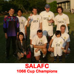

OLD STORIES - 2003
IT's OFFICIAL - PUMA BALLS!
 Dec 25th, Tokyo. A merry Christmas from PUMA means new balls for the new league.
Dec 25th, Tokyo. A merry Christmas from PUMA means new balls for the new league.
PUMA, the major sports manufacturer, have shown their backing
to Tokyo Metropolis league, by agreeing to supply the league with match balls. They will also give prizes for awards
such as golden boot amongst others. Puma have supported other amateur competitions, like the Copa Chile, for many years
and they are excited about this new project. We look forward to kicking off the league with PUMA
balls, on January 10th.
KICK-OFF JAN 10th
Dec 5th, Tokyo. Grounds finally sorted, Schedule set for rounds 1-4.
The TML is all set to kick off it's 1st round of matches on the weekend of Jan 10th & 11th at St. Marys and OiFuto Dai Ni. The 1st
round of matches is as follows:
- Div 1: Hibs FC vs SALA FC, Swiss FC vs France FC, Jetro FC vs Nelson FC, Maritizio FC vs BFC
- Div 2: Nova FC vs Barbarians FC, Dutch Embassy vs Fat Boys FC, Perfidious Albion vs Shane FC, Geckoes vs Celts, JET's vs Vagabonds
Rounds 2, 3 & 4 will be completed by the end of February, with an aim to finishing the 1st season by June. We can then have the 2nd Season running for the full term between End of August 04 to May 05 with 10 teams in the 1st division playing each other twice and 14 teams in the 2nd Division playing each other once.
REGISTRATION CLOSED
Nov 15th, Tokyo. Last minute rush means 19 teams to start.
Finally, the registration for Metropolis League has closed, with more teams than expected joining. Although we had been planning to have 2 leagues of 6 or 8
teams, that will have to be changed to 9 & 10 thanks to a few late entries. The split for the 2 Divisions should be quite a logical choice but has yet to be decided.
BFC, Swiss, Hibs, France, YC&AC, Sala FC, Kanto Celts, BEFC, Maritizio, JET's, Geckoes, Jetro, Vagabonds, Shane FC, Barbarians, Nelson FC(JP Morgan), Nova FC, Dutch Embassy, Fatboys.
With teams still trying to complete their matches in other leagues and cups, christmas & New Year, it now appears best to start the league in the New Year.
We hope to have a small New Year 7 a side tourney to kick things off and then go from there.
SALA WIN HIGHLAND GAMES 1066 CUP, BRIT SCHOOL TAKE MASTERS.

19th Oct, Ueno Gakuin.
The biggest Highland Games 5-a-side soccer tournament to date, saw 21 teams turn up to play football on a beautiful, sunny day. Last years champions, KFC hit
trouble from the start, losing their captain, Kirk and a striker with injuries in the opening matches. Newcomers Shane FC put in a good performance as did the
British Embassy but the team of the day were SALA FC. After 2 wins & 2 draws in the league games, they seemed to rally for the semi's & Finals eventually
beating KFC 3-1 for the cup.
CLICK HERE FOR PHOTOS
A late drop-out by the French in the masters competition, meant one group only had three teams. This didn't stop the old boys having a good day out though,
with many of the teams showing they still had what it takes on the field. British School Dads had a pretty easy run through the league, but couldn't score
past BFC Masters until a penalty shoot out in the semi-finals. Local team Yamai FC were there opponents in the finals but with a 3-0 win, the Brit dads came
out on top.
For all the results, please click here